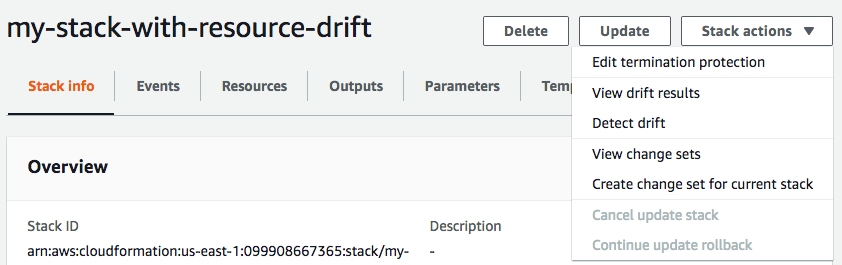

在整个 CloudFormation 堆栈上检测偏差
在堆栈上执行偏差检测操作会确定堆栈是否已偏离其预期的模板配置，并返回有关支持偏差检测的堆栈中每个资源的偏差状态的详细信息。
使用 AWS Management Console 在整个堆栈上检测偏差
打开 AWS CloudFormation 控制台，地址：https://console.aws.amazon.com/cloudformation
。 -
从堆栈列表中，选择要执行偏差检测的堆栈。在堆栈详细信息窗格中，选择 Stack actions (堆栈操作)，然后选择 Detect drift (检测偏差)。
CloudFormation 会显示一个信息栏，指示已为选定堆栈启动偏差检测。
-
请耐心等待，直到 CloudFormation 完成偏差检测操作。偏差检测操作完成后，CloudFormation 会更新堆栈的偏差状态和上一次偏差检查时间。这些字段在堆栈详细信息页面上 Stack info（堆栈信息）窗格的 Overview（概述）部分中列出。
偏差检测操作可能需要几分钟，具体取决于堆栈中包含的资源数量。您一次只能在给定堆栈上运行一个偏差检测操作。即使您关闭信息栏，CloudFormation 也会继续执行偏差检测操作。
-
查看堆栈及其资源的偏差检测结果。在选定堆栈的情况下，从 Stack actions (堆栈操作) 菜单中选择 View drift results (查看偏差结果)。
CloudFormation 会列出堆栈的整体偏差状态，以及最后一次在堆栈或其任何单个资源上启动偏差检测的时间。如果堆栈的一个或多个资源已偏离，则认为堆栈已偏离。

在 Resource drift details (资源偏差状态) 部分中，CloudFormation 会列出每个堆栈资源、其偏差状态，以及最后一次在资源上启动偏差检测的时间。将会显示每个资源的逻辑 ID 和物理 ID，以帮助您识别它们。此外，对于状态为 MODIFIED (已修改) 的资源，CloudFormation 会显示资源偏差详细信息。
您可以使用偏差状态列根据资源偏差状态对资源排序。
-
查看已修改资源的详细信息。
-
选定已修改的资源，选择 View drift details（查看偏差详细信息）。
CloudFormation 会显示该资源的偏差详细信息页面。此页面会列出资源的预期和当前属性值，以及两者之间的任何区别。
要突出显示区别，请在区别部分中选择属性名称。
-
添加的属性在 Details（详细信息）部分的 Current（当前）列中以绿色突出显示。
-
删除的属性在 Details（详细信息）部分的 Expected（预期）列中以红色突出显示。
-
其值已更改的属性在 Expected (预期) 和 Current (当前) 列中以黄色突出显示。
-
-

-
使用 AWS CLI 在整个堆栈上检测偏差
要使用 AWS CLI 在整个堆栈上检测偏差，请使用以下 aws
cloudformation 命令：
-
detect-stack-drift，用于对堆栈启动偏差检测操作。 -
describe-stack-drift-detection-status，用于监控堆栈偏差检测操作的状态。 -
describe-stack-resource-drifts，可查看堆栈偏差检测操作的详细信息。
-
使用
detect-stack-drift可在整个堆栈上检测偏差。指定堆栈名称或 ARN。您还可以指定要用作此偏差检测操作的筛选条件的任何特定资源的逻辑 ID。$aws cloudformation detect-stack-drift --stack-namemy-stack-with-resource-drift{ "StackDriftDetectionId": "624af370-311a-11e8-b6b7-500cexample" } -
由于堆栈偏差检测操作可能会长时间运行，因此请使用
describe-stack-drift-detection-status来监控偏差操作的状态。此命令获取detect-stack-drift命令返回的堆栈偏移检测 ID。在下面的示例中，我们采用了上面的
detect-stack-drift示例返回的堆栈偏差检测 ID，并将其作为参数传递给describe-stack-drift-detection-status。该参数返回操作详细信息，以显示偏差检测操作已完成，单个堆栈资源已偏离，并且整个堆栈被视为已因此偏离。$aws cloudformation describe-stack-drift-detection-status --stack-drift-detection-id624af370-311a-11e8-b6b7-500cexample{ "StackId": "arn:aws:cloudformation:us-east-1:099908667365:stack/my-stack-with-resource-drift/489e5570-df85-11e7-a7d9-50example", "StackDriftDetectionId": "624af370-311a-11e8-b6b7-500cexample", "StackDriftStatus": "DRIFTED", "Timestamp": "2018-03-26T17:23:22.279Z", "DetectionStatus": "DETECTION_COMPLETE", "DriftedStackResourceCount": 1 } -
堆栈偏差检测操作完成后，使用
describe-stack-resource-drifts命令可查看结果，包括已偏离的资源的实际和预期属性值。以下示例使用
stack-resource-drift-status-filters参数来请求已修改或删除的资源的堆栈偏差信息。该请求返回有关一个已修改资源的信息，包括其值已更改的两个属性的详细信息。不会删除任何资源。$aws cloudformation describe-stack-resource-drifts --stack-namemy-stack-with-resource-drift--stack-resource-drift-status-filters MODIFIED DELETED{ "StackResourceDrifts": [ { "StackId": "arn:aws:cloudformation:us-east-1:099908667365:stack/my-stack-with-resource-drift/489e5570-df85-11e7-a7d9-50example", "ActualProperties": "{\"ReceiveMessageWaitTimeSeconds\":0,\"DelaySeconds\":120,\"RedrivePolicy\":{\"deadLetterTargetArn\":\"arn:aws:sqs:us-east-1:099908667365:my-stack-with-resource-drift-DLQ-1BCY7HHD5QIM3\",\"maxReceiveCount\":12},\"MessageRetentionPeriod\":345600,\"MaximumMessageSize\":262144,\"VisibilityTimeout\":60,\"QueueName\":\"my-stack-with-resource-drift-Queue-494PBHCO76H4\"}", "ResourceType": "AWS::SQS::Queue", "Timestamp": "2018-03-26T17:23:34.489Z", "PhysicalResourceId": "https://sqs.us-east-1.amazonaws.com/099908667365/my-stack-with-resource-drift-Queue-494PBHCO76H4", "StackResourceDriftStatus": "MODIFIED", "ExpectedProperties": "{\"ReceiveMessageWaitTimeSeconds\":0,\"DelaySeconds\":20,\"RedrivePolicy\":{\"deadLetterTargetArn\":\"arn:aws:sqs:us-east-1:099908667365:my-stack-with-resource-drift-DLQ-1BCY7HHD5QIM3\",\"maxReceiveCount\":10},\"MessageRetentionPeriod\":345600,\"MaximumMessageSize\":262144,\"VisibilityTimeout\":60,\"QueueName\":\"my-stack-with-resource-drift-Queue-494PBHCO76H4\"}", "PropertyDifferences": [ { "PropertyPath": "/DelaySeconds", "ActualValue": "120", "ExpectedValue": "20", "DifferenceType": "NOT_EQUAL" }, { "PropertyPath": "/RedrivePolicy/maxReceiveCount", "ActualValue": "12", "ExpectedValue": "10", "DifferenceType": "NOT_EQUAL" } ], "LogicalResourceId": "Queue" } ] }